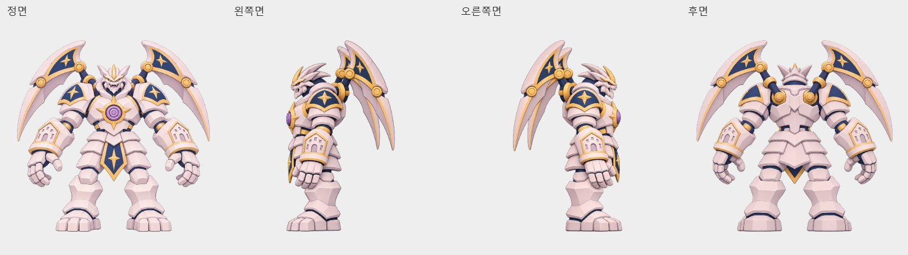

하드 날개를 몸체에서 분리했습니다
하드 몸체 4장 + 하드 날개 4장 · 노멀 몸체·돌봉/방패 8장 포함
사용 순서 · 정렬 좌표 · 생성 프롬프트
하드 날개
좌우 날개와 각 연결부를 몸체와 분리
돌봉 + 방패
두 장비를 한 이미지에 고정 배치
날개가 부착된 기존 디자인 · 조립 위치 참고용

조립 비율 참고용이며 입력 세트에 섞지 않습니다.
각 물체의 중심·높이·하단 위치는 4방향에 걸쳐 고정했습니다. 날개는 연결부까지 포함하며, 어깨갑주는 몸체에 남아 있습니다.
AI 참고 이미지입니다. 실제 Tripo 메시 생성·부착 검증은 수행하지 않았습니다.